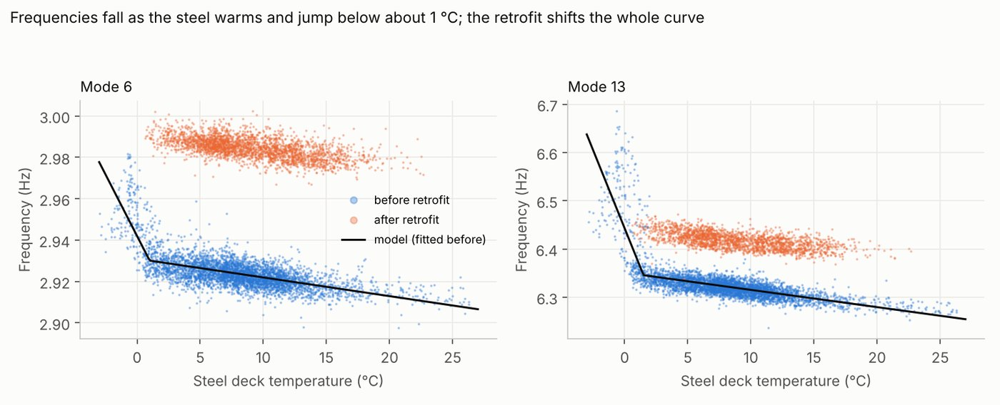
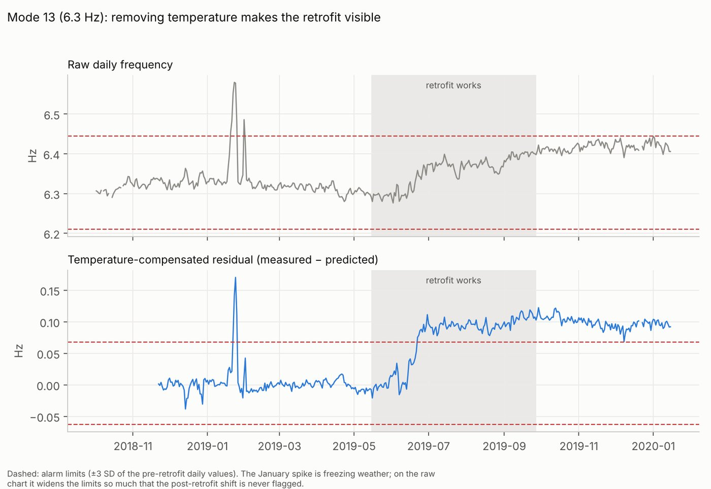
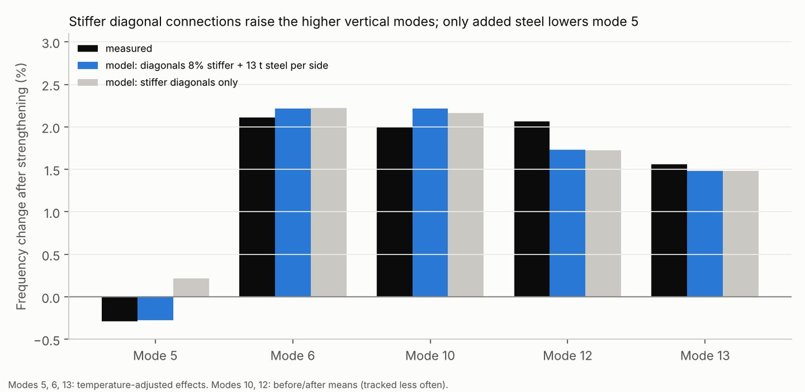
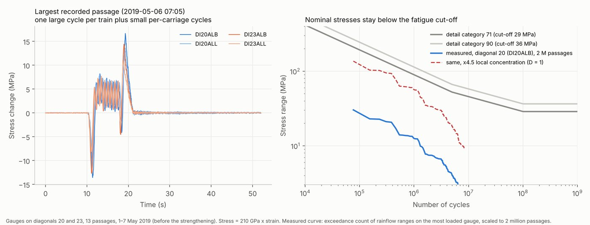

Back to all work
Separating temperature from structural change on a real railway bridge, and what the repair changed
Temperature moves a bridge's natural frequencies as much as damage or repair does. Before anyone can say what a repair did, temperature has to be taken out.
98%post-retrofit days flagged for mode 13 (was 0%)
+2.1%retrofit effect on mode 6, at fixed temperature
7–8%stiffer diagonal connections, from the FE model
4.5local stress factor needed to explain the fatigue damage
The problem
KW51 is a steel bowstring arch railway bridge between Leuven and Brussels, monitored by KU Leuven from 2018 to 2020. Damage was found at its connections, and the bridge was strengthened in 2019.
Steel softens as it warms and stiffens sharply when it freezes, so the raw frequencies swing with the seasons. On a simple alarm chart, that swing hides the retrofit entirely for some modes.
What I did
- Used the five vibration modes tracked at least 80% of the time in every period, and the steel deck temperature.
- For each mode, modelled frequency as a linear function of temperature plus an extra stiffening term below a freezing knot. The model and knot were chosen by blocked cross-validation on the pre-retrofit months only, so nothing after the retrofit influenced the choice.
- Applied the pre-retrofit model unchanged during and after the works. The mean post-retrofit residual is the retrofit's effect at a fixed temperature, with bootstrap intervals.
- Compared alarm charts on raw and temperature-compensated frequencies.
- Built an in-plane finite element model of the arch, deck girder and 16 diagonals, matched its modes to the measured mode shapes (MAC 0.96–1.00), and fitted two parameters to the measured changes: diagonal connection stiffness and added steel.
- Checked the diagonals against Eurocode fatigue rules (EN 1993-1-9) from strain-gauge records of train passages: rainflow cycle counting, S-N curves and Miner's rule.
Results




| Mode | Measured change | Model: stiffer diagonals + added steel | Model: stiffer diagonals only |
|---|---|---|---|
| 5 (1st symmetric) | −0.29% | −0.27% | +0.22% |
| 6 | +2.11% | +2.22% | +2.22% |
| 10 | +2.00% | +2.22% | +2.16% |
| 12 | +2.07% | +1.73% | +1.72% |
| 13 | +1.56% | +1.48% | +1.48% |
The conclusion (7–8% stiffer connections, 6–13 t of added steel per side) holds across every tested variant of the unpublished geometry.
Limitations
- A single freezing knot cannot follow a multi-day cold spell in January 2019; that spike causes most of the remaining false-alarm days.
- The confidence intervals cover measurement noise, not model error. For the noisier modes the estimate moves by up to 0.18 percentage points between comparison windows.
- The finite element model is 2-D and covers vertical modes only; it cannot say how stiff the connections were in absolute terms or exactly which were strengthened.
- The fatigue check uses 13 passages from one week, gauges on the members rather than at the welds, and an assumed traffic volume, so the stress factor is indicative.
- KW51 is an established benchmark and its authors have studied these effects. This project reproduces that kind of analysis independently and adds per-mode, temperature-adjusted effect sizes with uncertainty.